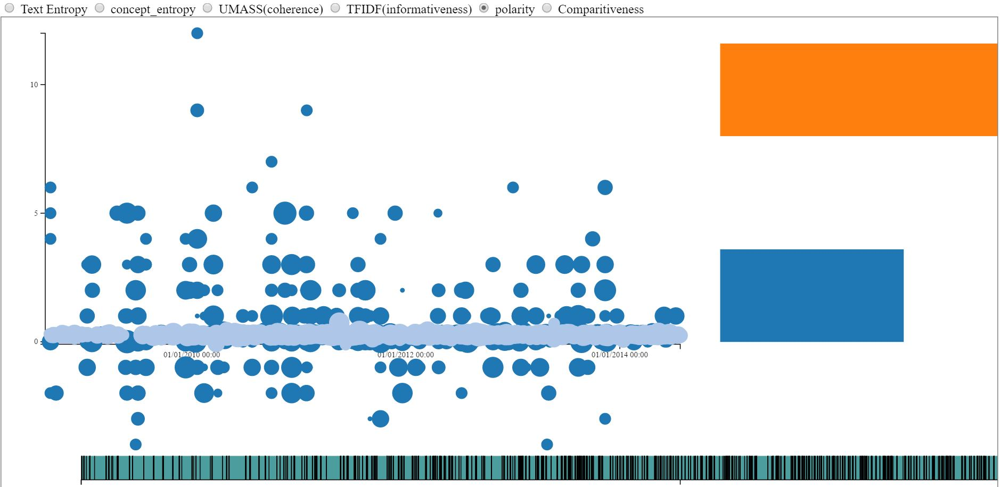

Arizona State University
Jan 2015 - Dec 2016
University of Kerala
Jul 2009 - Aug 2013
- Managed distributed cluster and helped production release via Docker image.
- Developed skills in Linux virtualization using QEMU, KVM, libvirt.
- Deployed applications using Amazon Web Services (AWS) / Elastic Cloud Compute (EC2).
- Gained proficiency in application production and deployment using Apache Mesosphere, Apache Marathon and Docker.
Toshiba Medical Systems Corporation (PIMS Application Development and Support)
- Provided user requirements analysis, design and programming support for enhancement of PIMS application.
- Assisted many senior developers in creating quick fixes to bugs for the software workflow process.
- Developed troubleshooting skills through log analysis and built hands-on experience in implementing design patterns.
- Charles Courlbourn
- Mohamed Sarwat
- Yinong Chen
- Stephen Yau
- Hanghang Tong
- Hessam Sarjoughian
- Frank Calliss
- Erin Walker
- Partha Dasgupta
- Sharon Hsio
Desk Assistant - Residential Housing
Transcriber - W P Carey School of Business
Customer Service Associate - Sun Devil Campus Stores
Life Guard - Sun Devil Fitness Center
- Deployment in a cluster managed by 1 master and 3 slave nodes.
- Data Coordinate storage in Hadoop HDFS.
- Application developed in Java using spark libraries and geospatial operations implemented using JTS topological library.
Source Code
- Allows users to chat on numerous topics and show statistics for identifying quality information based on topics.
- Users can tag when sending a chat message and like other valuable messages. The like count is used for generating statistics.
- Wiki generation based on contents receiving likes greater than a threshold and wiki categorization based on tagging.
Source Code
Application
- Uses D3 visualization to show analysis results & finds whether a post is valuable or not.
Source Code
Application

- Used different classification techniques such as random forest classifier and AdaBoost classifier.
- Predicted disease from symptoms with 84% accuracy.
Source Code
- Secured through OTP and allows multiple transactions to occur concurrently.
Source Code
- Serialization of json and xml formats.
- Queue operation, Data Structures & Basic IO operations.
Source Code
Created by Karthik Sarma